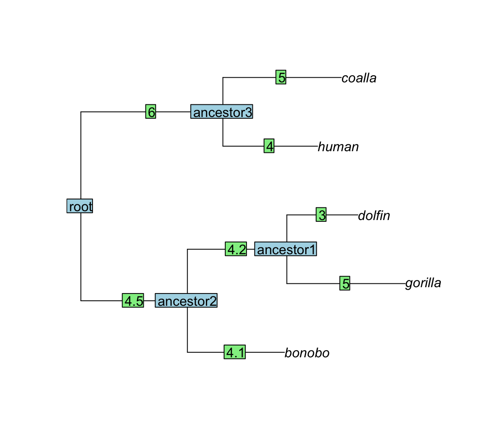

SPLITTRunTraversal.RmdTraversalTask template classOnce defined, the TraversalSpecification-class is passed as a template argument to a TraversalTask. This is a template class, which is already written, so the only thing we do is to specify it for our TraversalTask using a typedef like the following one:
typedef TraversalTask< AbcPMM<OrderedTree<std::string, double>> > ParallelPruningAbcPMM;The above code demonstrates one of the powers of C++ templates, namely to define complex types with a single line of code. To understand it, we could write an equivalent but more explicit code:
// use OrderedTree with string-nodes and double branch lengths
typedef OrderedTree<std::string, double> MyTreeType;
// concretise our TraversalSpecification-class
typedef AbcPMM<MyTreeType> MyTraversalSpecificationType;
// and the TraversalTask is:
typedef TraversalTask< MyTraversalSpecificationType > ParallelPruningAbcPMM;The next step is to write a program that executes our TraversalTask. For the PMM-example, we will write a program that reads a tree and trait-data from the standard input, than executes a loop reading model parameters from the standard input and calculating log-likelihood of the PMM for these parameters and the input tree and data. Let’s go steb by step through the code for this program.
We specify the input tree with the following format:
Here is an example of an input:
9 5
bonobo ancestor2 4.1
coalla ancestor3 5
gorilla ancestor1 2.8
dolfin ancestor1 3
human ancestor3 4
ancestor1 ancestor2 4.2
ancestor3 root 6
ancestor2 root 4.5Here is the C++ code for reading the tree in the above format from the standard input stream (std::cin):
using namespace std;
int main(int argc, char* argv[]) {
cout<<"Hello from the SPLITT PMM example!"<<endl;
cout<<"Reading the input tree..."<<endl;
// Read the number of nodes and tips
uint M, N;
cin>>M>>N;
// read the tree
vector<string> daughters(M-1);
vector<string> parents(M-1);
vec t(M-1);
for(int i=0; i < M-1; i++) {
cin>>daughters[i]>>parents[i]>>t[i];
}
// Other code discussed later on...
return 0
}At present SPLITT does not provide functions for parsing different tree formats. I did not need this functionality, because I was using another software to read my input trees and it was very easy to use that software to convert these trees to a list of branches as above. In particular, I’ve used the R-package ape, which can parse many tree-formats. For example, here is how one can specify the above example tree in newick format and parse it using ape:
library(ape)
newick_text <- "((bonobo:4.1,(gorilla:5,dolfin:3)ancestor1:4.2)ancestor2:4.5,(human:4,coalla:5)ancestor3:6)root;"
tree <- read.tree(text = newick_text)Then, one can write the following R-function to print the branches of the tree as above:
PrintBranches <- function(phy) {
M <- length(phy$edge.length) + 1
N <- length(phy$tip.label)
cat(M, " ", N, "\n")
if(!is.null(phy$node.label)) {
labs <- c(phy$tip.label, phy$node.label)
} else {
labs <- c(phy$tip.label, "root", paste0("ancestor", 1:(M - N - 1)))
}
for(i in 1:(M - 1)) {
cat(labs[phy$edge[i, 2]], " ", labs[phy$edge[i, 1]], " ", phy$edge.length[i], "\n")
}
}
PrintBranches(tree)## 9 5
## ancestor2 root 4.5
## bonobo ancestor2 4.1
## ancestor1 ancestor2 4.2
## gorilla ancestor1 5
## dolfin ancestor1 3
## ancestor3 root 6
## human ancestor3 4
## coalla ancestor3 5Great that you are still reading! As a visual reward, here is how the example tree looks like (note that this tree does not reflect the true ancestral relationship between the mentioned species):
plot(tree)
edgelabels(text = tree$edge.length)
nodelabels(text=tree$node.label)
After reading the tree, the next step is to read the trait-values associated with each of the \(N\) tips in the tree. Each of the next \(N\) lines contains a tip-name and the corresponding trait values separated by a space. Here is how we read this data in the C++ program:
using namespace std;
int main(int argc, char* argv[]) {
// previously discussed code
cout<<"Reading the trait data..."<<endl;
vector<string> tip_names(N);
vec x(N);
for(int i = 0; i < N; i++) {
cin>>tip_names[i]>>x[i];
}
// other code discussed later
return 0;
}Then, we create a ParallelPruningAbcPMM::DataType object by calling its constructor. If you don’t remember how we defined ParallelPruningAbcPMM::DataType, just look back in the Writing a traversal specification-manual).
using namespace std;
int main(int argc, char* argv[]) {
// previously discussed code
// create the data-object
typename ParallelPruningAbcPMM::DataType data(tip_names, x);
// other code discussed later
return 0;
}TraversalTask objectNow everything is set up to create a ParallelPruningAbcPMM object. We do this by calling its constructor, which receives four arguments:
branch_start_nodes - this is an std::vector< NodeType > const& denoting the parent-node in each branch in the tree;branch_end_nodes - this is an std::vector< NodeType > const& denoting the daughter-node in each branch in the tree, corresponding to branch_start_nodes ;lengths - this is an std::vector< LengthType > const& denoting the length of each branch in the tree, corresponding to branch_start_nodes ;input_data - this is a DataType const& denoting the input data object for this traversal task.Calling the ParallelPruningAbcPMM constructor triggers the creation of the internal objects of the framework, i.e. an OrderedTree object maintaining the order in which the nodes are processed and a PreOrderTraversal or a PostOrderTraversal object implementing different parallelization modes of the two traversal types.
Here is how we construct the object in the example program:
using namespace std;
int main(int argc, char* argv[]) {
// previously discussed code
// Create the TraversalTask object: this will create the OrderedTree and the
// AbcPMM objects in the memory.
ParallelPruningAbcPMM pruningTask(parents, daughters, t, data);
// other code discussed later
return 0;
}In the main loop of the program, we read PMM-parameters \(\mathbf{\Theta}=<g_{M}, \sigma, \sigma_{e}>\) from the standard input and calculate the PMM log-likelihood for these parameters and the input tree and data. To calculate the log-likelihood, first we call the TraverseTree method of our pruningTask object to calculate the coefficients \(a_{M}\), \(b_{M}\) and \(c_{M}\) for the parameters \(\sigma\) and \(\sigma_{e}\), then we evaluate the log-likelihood value by applying the formula:
\[\ell\ell(\mathbf{\Theta})=a_{M}g_{M}^2+b_{M}g_{M}+c_{M}\].
The TraverseTree method has two arguments:
par - this is a ParameterType const&. If you don’t remember how we defined ParallelPruningAbcPMM::ParameterType, just look back in the Writing a traversal specification-manual).mode - this is an uint specifying the whether SPLITT should performe the traversal using multiple cores and what parallelization order should be applied. This is a more technical topic covered in a separate vignette. For now, it is sufficient to know that specifying 0 for this value tells SPLITT to run in mode AUTO. In this mode, SPLITT will try several modes during the first several TraverseTree calls and will stick to the one that resulted in fastest execution for the remaining executions. In the ideal use-case, the TraversalTask’s TraverseTree() method will be called repeatedly, varying the model parameters, the input data and branch lengths on a fixed tree topology. This encompasses all scenarios where a model is fitted to a fixed tree and data, e.g. ML or Bayesian PCM inference.Here is the corresponding C++ code for reading the main loop:
using namespace std;
int main(int argc, char* argv[]) {
// previously discussed code
// model parameters
double gM, sigma, sigmae;
vec param(2);
cout<<"Main loop..."<<endl;
// run this loop as long as parameters can be read from the standard input
while( cin>>gM>>sigma>>sigmae ) {
param[0] = sigma*sigma;
param[1] = sigmae*sigmae;
cout<<" Calculating a, b, c at the root for sigma="<<sigma<<" and sigmae="<<sigmae<<std::endl;
vec abc = pruningTask.TraverseTree(param, 0);
cout<<" a="<<abc[0]<<", b="<<abc[1]<<", c="<<abc[2]<<std::endl;
double LL = abc[0]*gM*gM + abc[1]*gM + abc[2];
cout<<" LL(gM="<<gM<<", sigma="<<sigma<<", sigmae="<<sigmae<<"): "<<LL<<endl;
}
cout<<"Main loop done."<<endl;
std::cout<<"Good bye!"<<std::endl;
return 0;
}Here is the entire program code:
typedef TraversalTask< AbcPMM<OrderedTree<std::string, double>> > ParallelPruningAbcPMM;
// will be using std::string, std::vector, std::cin and std::cout quite a lot.
using namespace std;
int main(int argc, char* argv[]) {
// Will be false if the program is run without any arguments. Pass any argument
// after the program name and verbose will be set to true.
bool verbose = (argc > 1);
cout<<"Hello from the SPLITT PMM example!"<<endl;
cout<<"Reading the input tree..."<<endl;
// Read the number of nodes and tips
uint M, N;
cin>>M>>N;
// read the tree
vector<string> daughters(M-1);
vector<string> parents(M-1);
vec t(M-1);
for(int i=0; i < M-1; i++) {
cin>>daughters[i]>>parents[i]>>t[i];
}
cout<<"Reading the trait data..."<<endl;
vector<string> tip_names(N);
vec x(N);
for(int i = 0; i < N; i++) {
cin>>tip_names[i]>>x[i];
}
// create the data-object
typename ParallelPruningAbcPMM::DataType data(tip_names, x);
// Create the TraversalTask object: this will create the OrderedTree and the
// AbcPMM objects in the memory.
ParallelPruningAbcPMM pruningTask(parents, daughters, t, data);
// model parameters
double gM, sigma, sigmae;
vec param(2);
cout<<"Main loop..."<<endl;
// run this loop as long as parameters can be read from the standard input
while( cin>>gM>>sigma>>sigmae ) {
param[0] = sigma*sigma;
param[1] = sigmae*sigmae;
cout<<" Calculating a, b, c at the root for sigma="<<sigma<<" and sigmae="<<sigmae<<std::endl;
vec abc = pruningTask.TraverseTree(param, 0);
cout<<" a="<<abc[0]<<", b="<<abc[1]<<", c="<<abc[2]<<std::endl;
double LL = abc[0]*gM*gM + abc[1]*gM + abc[2];
cout<<" LL(gM="<<gM<<", sigma="<<sigma<<", sigmae="<<sigmae<<"): "<<LL<<endl;
}
cout<<"Main loop done."<<endl;
std::cout<<"Good bye!"<<std::endl;
return 0;
}Now, it may be useful to have a look at a class diagram of the SPLITT library. This would provide an overview of all classes, methods and typedefs used by SPLITT. You can such a diagram here.
The next steps depend on your desired application. If your goal is to call SPLITT from an R-package, you are lucky, because I’ve already done this many times and I have described how to do this in this guide. Otherwise, if you need help, you can ask a question in the SPLITT issues list.